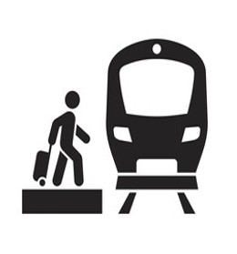

🚆For Passengers
⚙️ Admin Login

WardhaMetroFlow is an AI-powered metro simulation platform built for the city of Wardha, designed to bring smart public transportation to life in emerging smart cities.
Using cutting-edge AI algorithms, we deliver real-time route planning, traffic predictions, and passenger flow analysis — helping commuters, tourists, and city planners make travel decisions that are faster, safer, and more efficient.
Explore routes and plan your journey with ease.
Get live updates on metro schedules and crowding.
Plan your metro journeys effortlessly with our intuitive route planner that shows the best path, travel time, and station details in real time.
Get a live view of passenger flow and station activity to avoid crowded routes and enjoy a smoother travel experience.
Our AI analyzes traffic patterns and passenger density to recommend the fastest, safest, and most efficient routes.
Passengers get easy access to route planning tools, while admins manage stations, monitor traffic, and optimize operations in real time.

Explore our guide and FAQs to get started quickly.